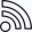

Veřejný obsah
Existují tři druhy informací které mohou být zveřejňovány z CourtHive/TMX do CourtHive/Live:
- Turnajové detaily (název, datumy, obecné informace)
- Turnajové plány / Rozpis utkání (“Order of Play” = OOP)
- Turnajové soutěže (výsledky utkání, hrací plány)
Požadavky ke zveřejňování
Zveřejnění je možné jen pokud Organizační klíč byl zadán. Poté co byl platný konfigurační klíč zadán, ikona zveřejnění se objeví v záložce Turnaj v Editačním módu.
Turnaj je možné editovat a zveřejňovat jen pokud je CourtHive/TMX klient konfigurován pro stejnou Organizaci ke které turnaj patří.
Identity prohlížeče
Každý prohlížeč (Chrome, Opera, Firefox, Safari) na každém zařízení obdrží tzv. Universal Unique Identifier (UUID). Navíc, pokud se do prohlížeče Chrome přihlásíte pomocí různých účtů Google, pak každý účet prohlížeče ve stejném počítači / zařízení má svůj vlastní identifikátor UUID.
CourtHive Cloud Server (CCS) kontroluje UUID klientů při určování zda může být turnaj zveřejněn jako “Oficiální” nebo “Neoficiální”. CCS povolí pouze jednomu klientovi ve stejném čase aby mohl zveřejnit či zrušit zveřejnění turnaje.
Viz: Autorizační klíče.
Ikony zveřejňování
Když jsou ikony zveřejňování viditelné, jejich barva označuje, zda bylo něco zveřejněno a pokud ano, tak jestli jsou zveřejněné informace aktuální nebo zastaralé.

Kliknutí na Ikonu zveřejnění spustí proces zveřejňování. Ikona nezmění barvu dokud CourtHive Cloud Server nezjistí, že zveřejňovaná položka byla přijata.
| Barva | Vysvětlení |
|---|---|
|  | Nezveřejněno |
| Zveřejněno, aktuální | |
 |
Zveřejněno, zastaralé |
V Seznamu soutěží kliknutí na ikonu Zveřejnit funguje jako přepínání mezi zveřejněním a zrušením zveřejnění.
Ve záložce Turnaj, Hrací plán a Rozpis utkání funguje kliknutí na ikonu Zveřejnit a Kontextové kliknutí a pak potvrzení na “Zrušit zveřejnění”.
Zrušení zveřejnění VŠECH turnajových soutěží
Kontextové kliknutí na ikonu Zveřejnit v hlavičce seznamu soutěží v záložce Soutěže zruší zveřejnění všech turnajových soutěží.
Zrušení zveřejnění turnaje
Kontextové kliknutí na ikonu Zveřejnit v záložce Turnaj odstraní kompletně celý turnaj z CourtHive/Live.
Autorizační klíče
Pokud jste součástí organizace, která schválila používání CourtHive, pak může být turnaj oficiálně zveřejněn zadáním autorizačního klíče.
Autorizační klíče jsou jednorázové, což znamená, že jakmile byly zadány, nemohou být znovu použity. Pouze jeden prohlížeč na jednom počítači smí být autorizován k oficiálnímu zveřejňování turnajových informací.

Pokud není předem příslušný turnaj ve Vašem kalendáři, zadání Autorizačního klíče ho přidá do lokální databáze.
“Kontextové kliknutí” na ikonu Domů zobrazí autorizační zprávu.
Příklady scénářů
Každý prohlížeč má jedinečnou identitu a zadáním jednorázového Autorizačního klíče poskytuje serveru jedinečný identifikátor prohlížeče, takže pouze tento konkrétní prohlížeč muže zveřejňovat “oficiálně”.
Prohlížeč, ve kterém je zadán Autorizační klíč, již musí být nakonfigurován pro stejnou organizaci která vytvořila turnaj.
Jediný rozdíl mezi Organizačním klíčem Admin a klíčem Rozhodčí je, že ten s Admin klíčem může generovat klíče pro autorizaci turnajů.
Pokud chce administrátor vytvořit Autorizační klíč tak musí mít turnaj ve svém kalendáři a ve svém autorizovaném prohlížeči. Pokud nemá rozhodčí turnaj ve svém kalendáři, tak bude tento turnaj přidán automaticky (ze serveru) až rozhodčí zadá Autorizační klíč.
Každý rozhodčí, který má Organizační klíč může vytvořit a zveřejnit svoje vlastní turnaje “Neoficiálně”. (Různé verze téhož turnaje mohou být zveřejněny “neoficiálně” a “oficiálně”).
Každý rozhodčí s Organizačním klíčem může také “Stáhnout / PULL” (cloud fetch) oficiální verzi turnaje ze serveru, ale pouze pokud celý turnaj byl “Odeslán /PUSHED” na server (šipka Nahoru v záložce Turnaj).
Pokud rozhodčí vytvoří svůj vlastní turnaj který není na seznamu turnajů u administrátora, jakým způsobem může potom administrátor vygenerovat autorizační klíč pro daný turnaj?
Jediný způsob je, že rozhodčí exportuje turnaj lokálně na disk a pošle turnajový soubor administrátorovi (přes email/zprávu). Poté administrátor importuje soubor s turnajem do svého lokálního kalendáře turnajů a vygeneruje pro rozhodčího Autorizační klíč nutný ke zveřejňování.